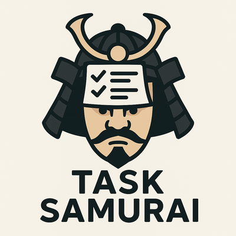
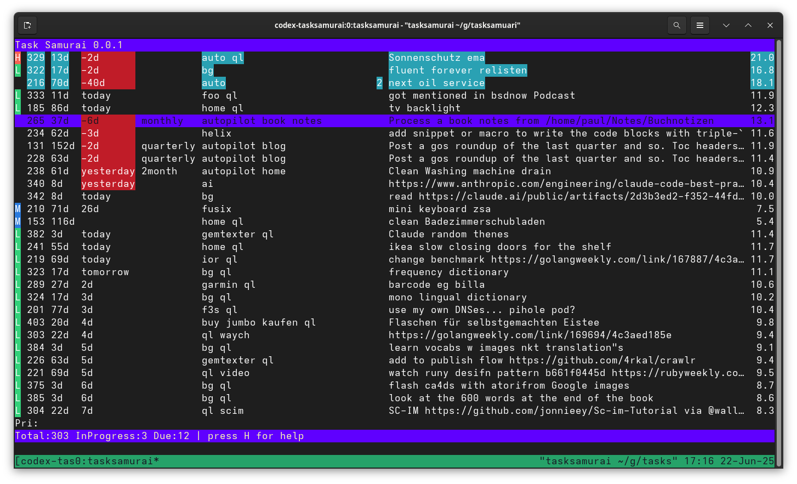

Task Samurai: An agentic coding learning experiment
Published at 2025-06-22T20:00:51+03:00

Table of Contents
Introduction
Task Samurai is a fast terminal interface for Taskwarrior written in Go using the Bubble Tea framework. It displays your tasks in a table and allows you to manage them without leaving your keyboard.
https://taskwarrior.org
https://github.com/charmbracelet/bubbletea
Why does this exist?
I wanted to tinker with agentic coding. This project was implemented entirely using OpenAI Codex. (After this blog post was published, I also used the Claude Code CLI.)
- I wanted a faster UI for Taskwarrior than other options, like Vit, which is Python-based.
- I wanted something built with Bubble Tea, but I never had time to dive deep into it.
- I wanted to build a toy project (like Task Samurai) first, before tackling the big ones, to get started with agentic coding.
https://openai.com/codex/
Given the current industry trend and the rapid advancements in technology, it has become clear that experimenting with AI-assisted coding tools is almost a necessity to stay relevant. Embracing these new developments doesn't mean abandoning traditional coding; instead, it means integrating new capabilities into your workflow to stay ahead in a fast-evolving field.
How it works
Task Samurai invokes the task command (that's the original Taskwarrior CLI command) to read and modify tasks. The tasks are displayed in a Bubble Tea table, where each row represents a task. Hotkeys trigger Taskwarrior commands such as starting, completing or annotating tasks. The UI refreshes automatically after each action, so the table is always up to date.

Where and how to get it
Go to:
https://codeberg.org/snonux/tasksamurai
And follow the README.md!
Lessons learned from building Task Samurai with agentic coding
Developer workflow
I was trying out OpenAI Codex because I regularly run out of Claude Code CLI (another agentic coding tool I am currently trying out) credits (it still happens!), but Codex was still available to me. So, I took the opportunity to push agentic coding a bit further with another platform.
I didn't really love the web UI you have to use for Codex, as I usually live in the terminal. But this is all I have for Codex for now, and I thought I'd give it a try regardless. The web UI is simple and pretty straightforward. There's also a Codex CLI one could use directly in the terminal, but I didn't get it working. I will try again soon.
Update: Codex CLI now works for me, after OpenAI released a new version!
For every task given to Codex, it spins up its own container. From there, you can drill down and watch what it is doing. At the end, the result (in the form of a code diff) will be presented. From there, you can make suggestions about what else to change in the codebase. What I found inconvenient is that for every additional change, there's an overhead because Codex has to spin up a container and bootstrap the entire development environment again, which adds extra delay. That could be eliminated by setting up predefined custom containers, but that feature still seems somewhat limited.
Once satisfied, you can ask Codex to create a GitHub PR (too bad only GitHub is supported and no other Git hosters); from there, you can merge it and then pull it to your local laptop or workstation to test the changes again. I found myself looping a lot around the Codex UI, GitHub PRs, and local checkouts.
How it went
Task Samurai's codebase came together quickly: the entire Git history spans from June 19 to 22, 2025, culminating in 179 commits:
- June 19: Scaffolded the Go boilerplate, set up tests, integrated the Bubble Tea UI framework, and got the first table views showing up.
- June 20: (The big one—120 commits!) Added hotkeys, colourized tasks, annotation support, undo/redo, and, for fun, fireworks on quit (which never worked and got removed at a later point). This is where most of the bugs, merges, and fast-paced changes happen.
- June 21: Refined searching, theming, and column sizing and documented all those hotkeys. Numerous tweaks to make the UI cleaner and more user-friendly.
- June 22: Final touches—added screenshots, polished the logo, fixed module paths… and then it was a wrap.
Most big breakthroughs (and bug introductions) came during that middle day of intense iteration. The latter stages were all about smoothing out the rough edges.
It's worth noting that I worked on it in the evenings when I had some free time, as I also had to fit in my regular work and family commitments during the day. So, I didn't spend full working days on this project.
What went wrong
Going agentic isn't all smooth. Here are the hiccups I ran into, plus a few lessons:
- Merge Floods: Every minor feature or fix existed on its branch, so merging was a constant process. It kept progress flowing but also drowned the committed history in noise and the occasional conflict. I found this to be an issue with OpenAI's Codex in particular. Not so much with other agentic coding tools like Claude Code CLI (not covered in this blog post.)
- Fixes on fixes: Features like "fireworks on exit" had chains of "fix exit," "fix cell selection," etc. Sometimes, new additions introduced bugs that needed rapid patching.
Patterns that helped
Despite the chaos, a few strategies kept things moving:
- Scaffolding First: I started with the basic table UI and command wrappers, then layered on features—never the other way around.
- Tiny PRs: Small, atomic merges meant feedback came fast (and so did fixes).
- Tests Matter: A solid base of unit tests for task manipulations kept things from breaking entirely when experimenting.
- Live Documentation: Documentation, such as the README, is updated regularly to reflect all the hotkey and feature changes.
Maybe a better approach would have been to design the whole application from scratch before letting Codix do any of the coding. I will try that with my next toy project.
What I learned using agentic coding
Stepping into agentic coding with Codex as my "pair programmer" was a big shift. I learned a lot—not just about automating code generation, but also about how you have to tightly steer, guide, and audit every line as things move at high speed. I must admit, I sometimes lost track of what all the generated code was actually doing. But as the features seemed to work after a few iterations, I was satisfied—which is a bit concerning. Imagine if I approved a PR for a production-grade deployment without fully understanding what it was doing (and not a toy project like in this post).
how much time did I save?
Did it buy me speed?
- Say each commit takes Codex 5 minutes to generate, and you need to review/guide 179 commits = about _6 hours of active development_.
- If you coded it all yourself, including all the bug fixes, features, design, and documentation, you might spend _10–20 hours_.
- That's a couple of days of potential savings—and I am by no means an expert in agentic coding, since this was my first completed agentic coding project.
Conclusion
Building Task Samurai with agentic coding was a wild ride—rapid feature growth, countless fast fixes, and more merge commits I'd expected. Keep the iterations short (or maybe in my next experiment, much larger, with better and more complete design before generating a single line of code), keep tests and documentation concise, and review and refine for final polish at the end. Even with the bumps along the way, shipping a terminal UI in days instead of weeks is a neat little showcase vibe coding.
Am I an agentic coding expert now? I don't think so. There are still many things to learn, and the landscape is constantly evolving.
While working on Task Samurai, there were times I missed manual coding and the satisfaction that comes from writing every line yourself, debugging issues manually, and crafting solutions from scratch. However, this is the direction in which the industry seems to be shifting, unfortunately. If applied correctly, AI will boost performance, and if you don't use AI, your next performance review may be awkward.
Personally, I am not sure whether I like where the industry is going with agentic coding. I love "traditional" coding, and with agentic coding you operate at a higher level and don't interact directly with code as often, which I would miss. I think that in the future, designing, reviewing, and being able to read and understand code will be more important than writing code by hand.
Do you have any thoughts on that? I hope, I am partially wrong at least.
E-Mail your comments to paul@nospam.buetow.org :-)
Other related posts are:
2025-08-05 Local LLM for Coding with Ollama on macOS
2025-06-22 Task Samurai: An agentic coding learning experiment (You are currently reading this)
Back to the main site